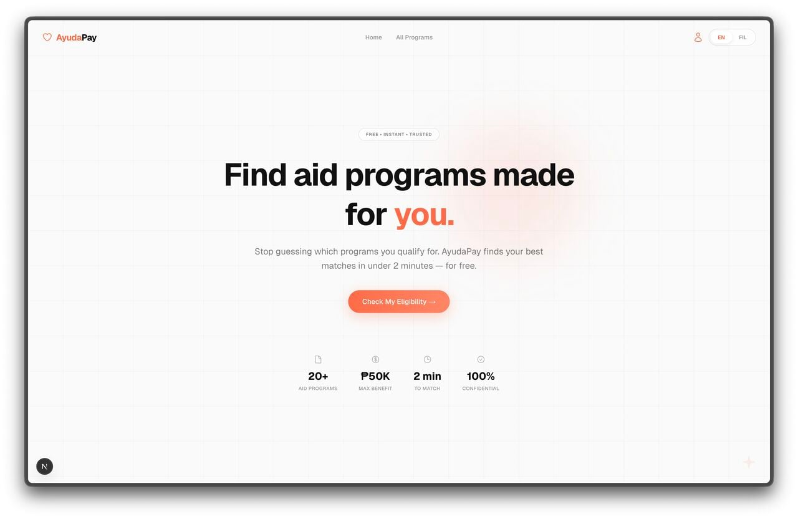
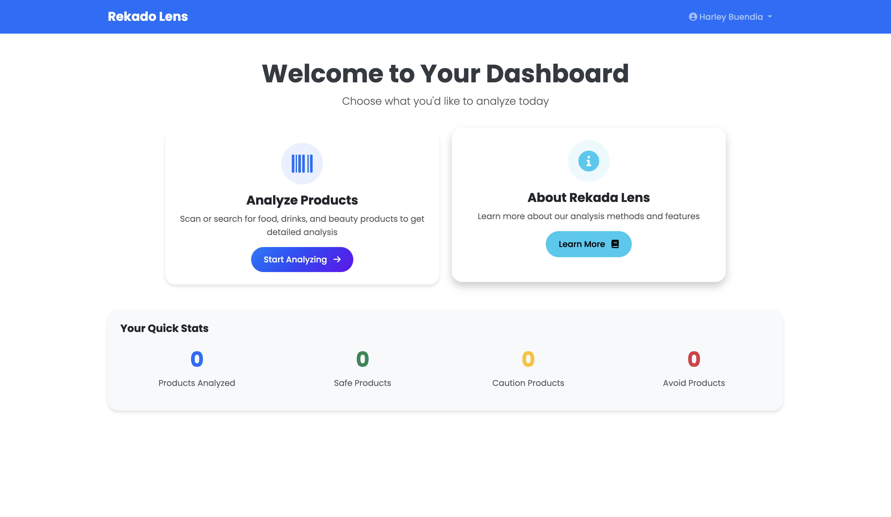
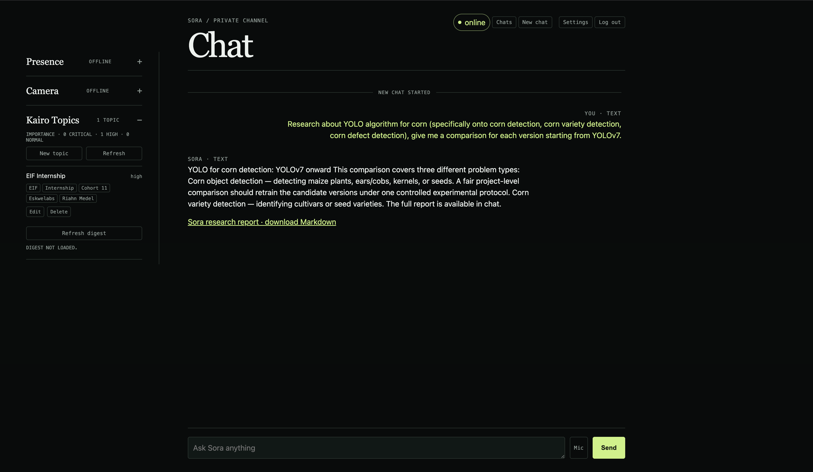
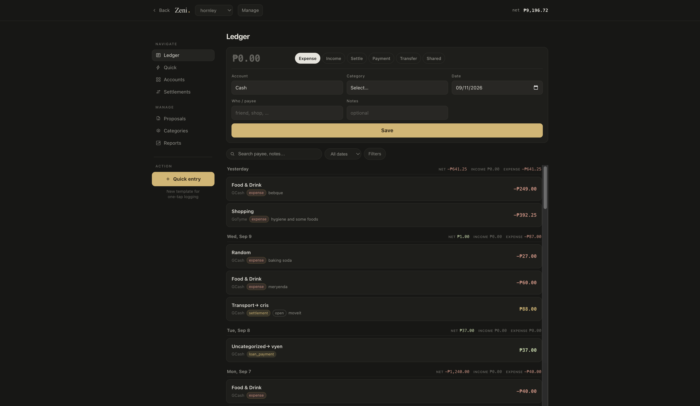
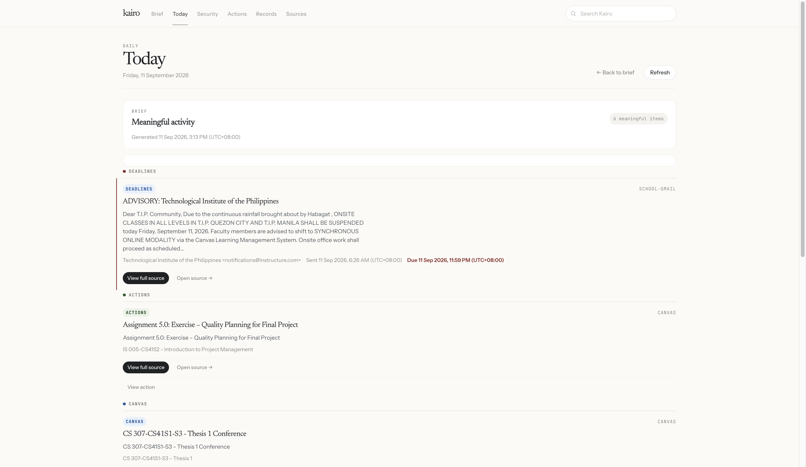
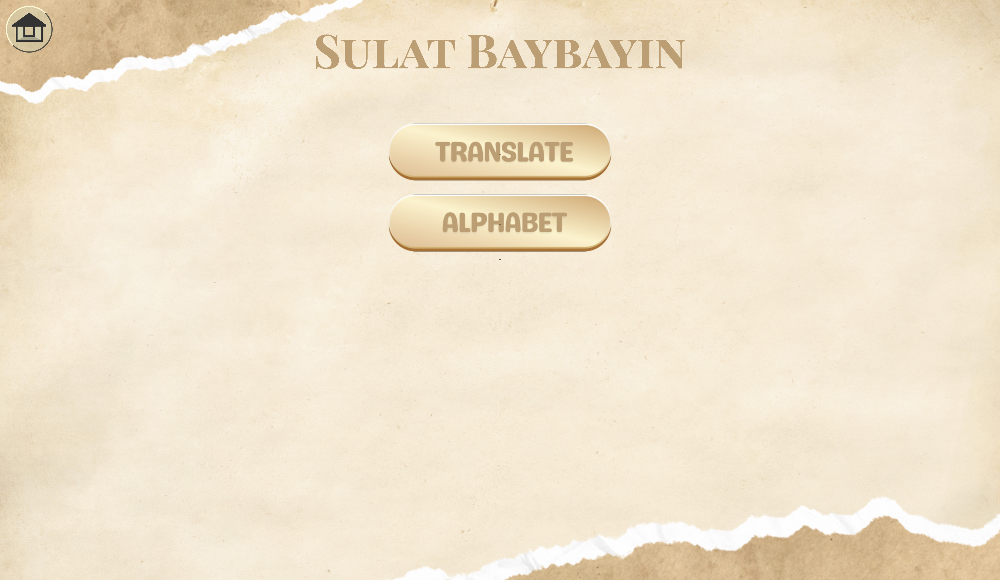

01
Sora
Software / Product
A project from the selected work lineup.
SOURCE / PRIVATE
Selected work / Japanese GP
Scroll through a continuous lap around a Suzuka-inspired circuit.






01
Software / Product
A project from the selected work lineup.